9 Objective 2
55 Questions.
9.1 Chatter | Describe the features
The Salesforce Administrator has been asked to summarize the important features of Chatter. Which features describe Chatter correctly?
The Chatter User Profile allows a user to share important information about themselves.
Chatter Feed Tracking provides real-time notification of changes to a particular record.
A user can choose to follow individual records using Chatter.
A Chatter user can add and share details about themselves on their Chatter profile page, including adding a profile picture and a profile banner. Changes to tracked record fields are detected by feed tracking and are posted as updates in the ‘What I Follow’ feed.
Chatter follows the record sharing model defined in the org, which means that users cannot see data to which they do not have access. There are several Chatter features that are available on the desktop that aren’t available in the Salesforce mobile app.
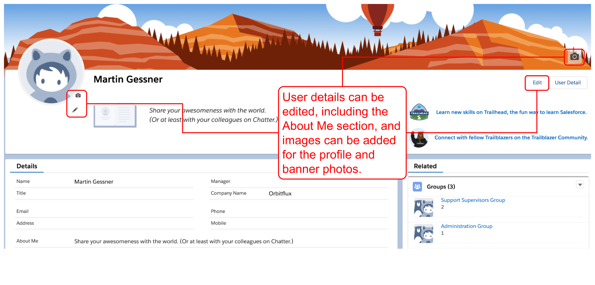
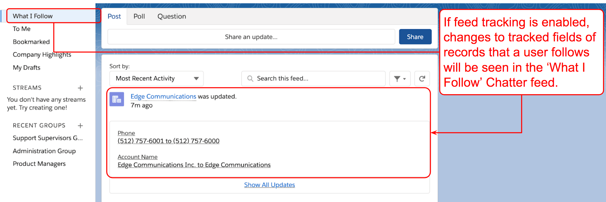
One of the Sales Managers would like to discuss a sales proposal with a few selected Account Managers. They want to make sure that the discussions related to it are available in one place and remain secure. Which options should the Salesforce Administrator consider?
Create an unlisted Chatter Group
Create a private Chatter Group
Any user can join a public Chatter group and the details will not remain secure. In order to ensure that the group remains secure and that no other user is able to view the discussions, a private or unlisted Chatter group can be created. Unlisted Chatter groups are more secure and offer more privacy compared to private groups, as users cannot ask to join or see the groups in list views, feeds, or search results.
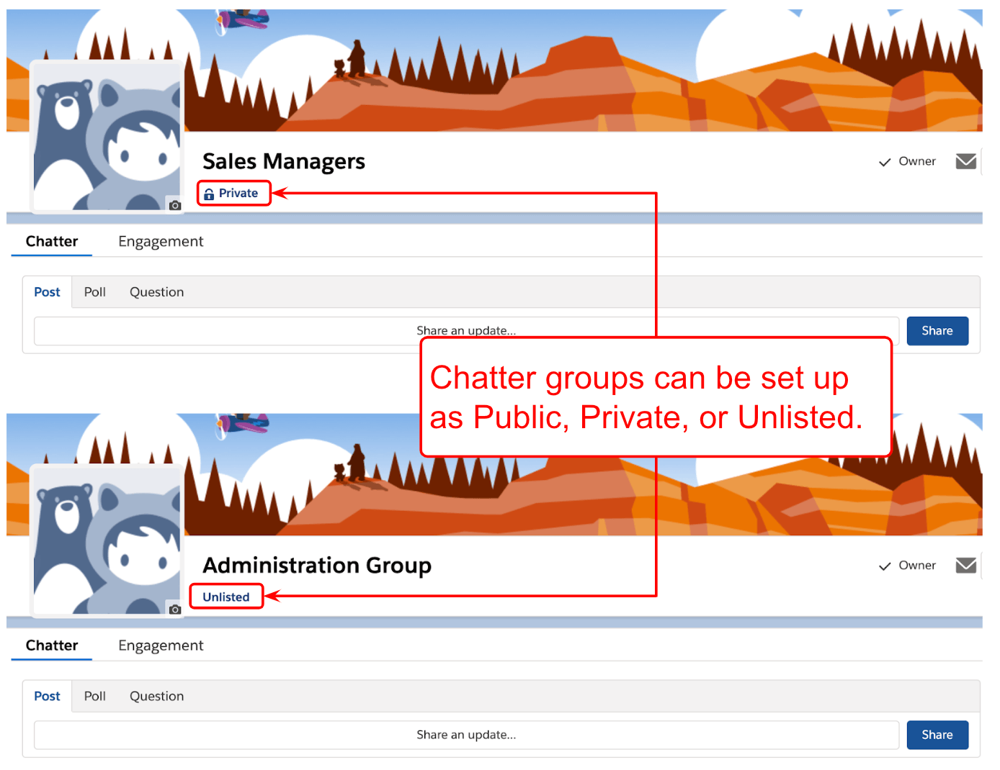
Which of the following are features of Chatter?
Create and join groups
Ability to share a file with other people
Follow records to be able to see changes to the records
Some features of Chatter include following records to view the changes made to them, sharing files with other people, and creating and joining groups.
The “mute” feature can be used to stop receiving notifications about certain posts. If someone is @mentioned on a muted post, it gets unmuted automatically. Email digests can be received on a daily or weekly basis.
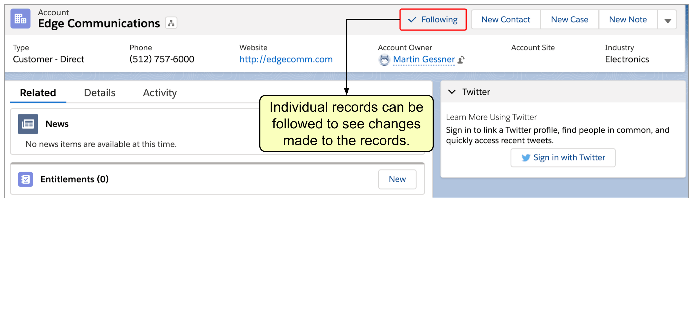
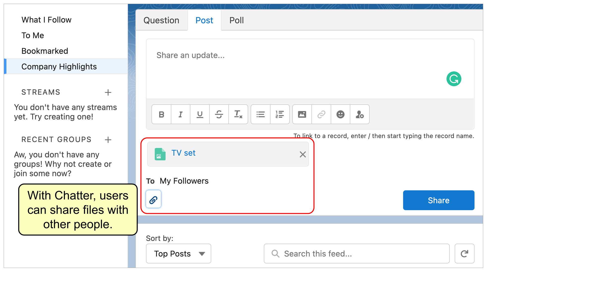
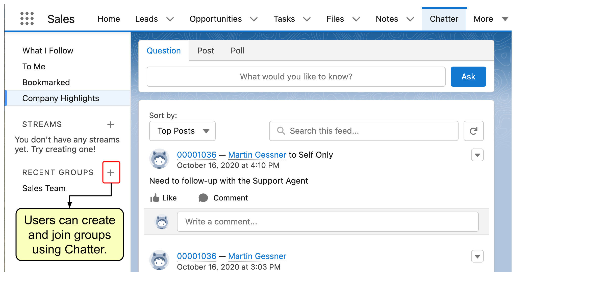
Which of the following are features included in Chatter?
Topics can be selected an added to a post.
Post can be shared to the user’s Chatter profile, or groups that the user is a member of.
A poll can be used within a Chatter post.
A poll can be shared as a Chatter post. Posts can refer to selected records but do not automatically include record data. Topics can be created/selected and added to a post using a hashtag before the Topic name.
Merge fields cannot be used in the post. Posts can be shared with a group or the user’s profile but not on social media channels.
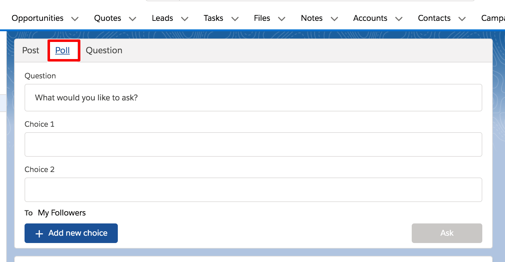
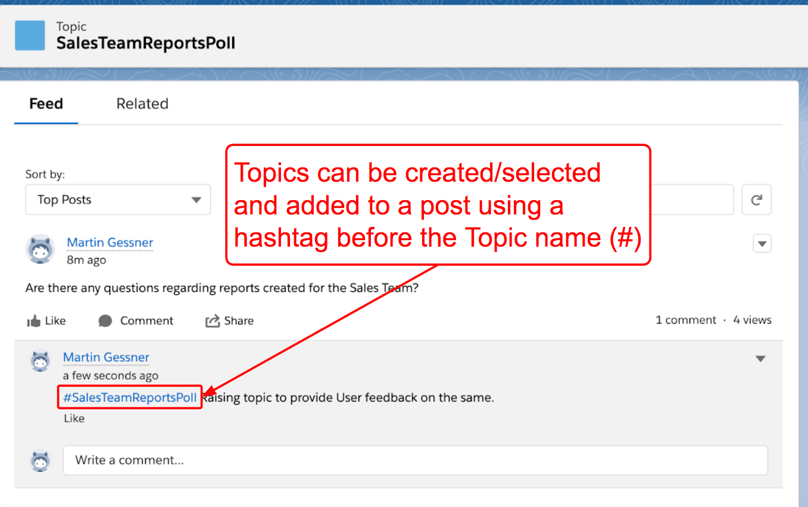
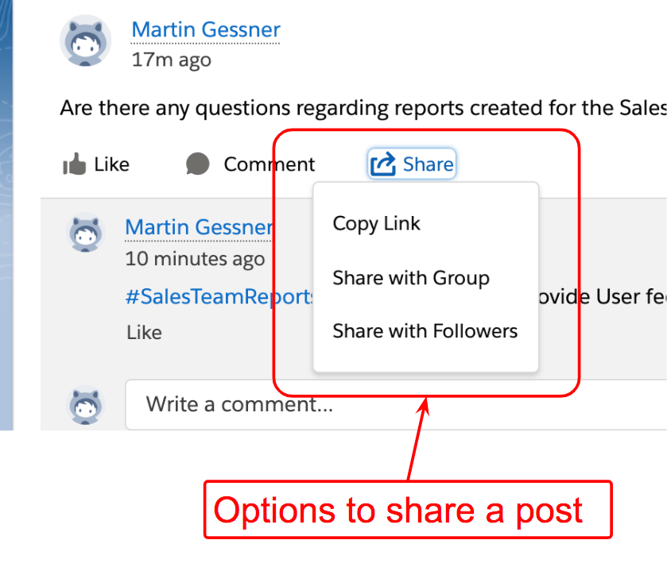
9.1.0.1 Enable Profile Based Roll out for Chatter
A government agency would like to use Chatter but plans to test it on one team initially. How can this be accomplished?
- Enable Profile Based Rollout for Chatter
and disable Chatter access for any custom profiles
that should not have access to Chatter.
The rollout of Chatter can be restricted by profile. To use Profile Based Rollout for Chatter, it must be enabled. Once it has been enabled, the ‘Enable Chatter’ permission would need to be deselected for the profiles that should not have access to Chatter. However, Standard Profile access to Chatter cannot be disabled. By default, new orgs will have Chatter enabled org-wide for all profiles. Salesforce must be contacted to enable a profile-based Chatter rollout to control access to Chatter at the profile or permission set level.
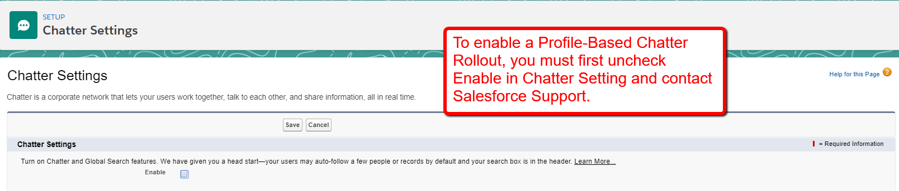
9.1.0.2 Allow Records in Groups
A user wants to collaborate and discuss a record as a team with a group of other users. How can a Salesforce Administrator enable this most efficiently?
- Create a group for the set of users and allow the ability to add records to Chatter groups by enabling the ‘Allow Records in Groups’ setting
By enabling the ‘Allow Records in Groups’ setting, users can add records to Chatter groups to collaborate on and discuss as a team in the group.
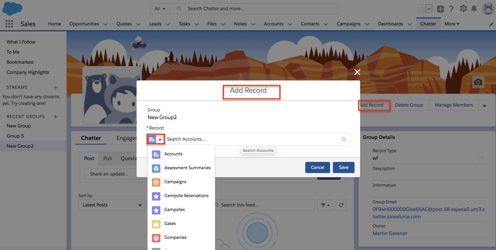
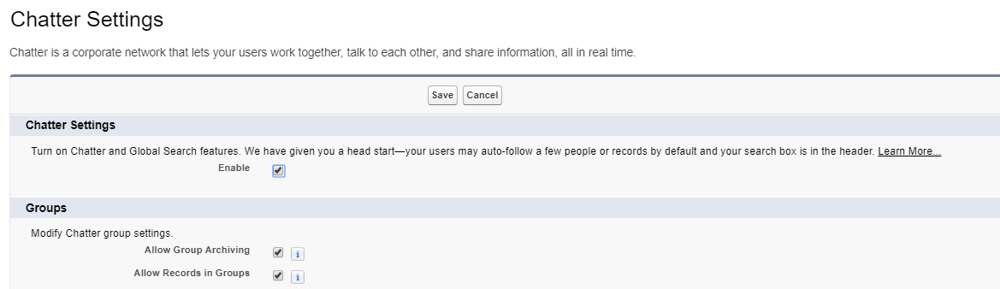
9.1.0.3 New Task
Julie has created a new post on the Chatter feed. After she has shared the post, what actions can she perform on the post?
Create New Task related to the post.
Edit the post and change the text
The only quick action that can be performed on a Feed Item/Post is ‘Create New Task’. However, a Salesforce Administrator must add the ‘Create New Task’ quick action to the ‘Feed Item Layout’ to make it visible to users. An existing post can be edited or deleted.
In Lightning Experience, Global Actions such as ‘Log a Call’ and ‘New Opportunity’ can be accessed in the Global Actions Menu by clicking the ‘+’ icon in the Salesforce header.
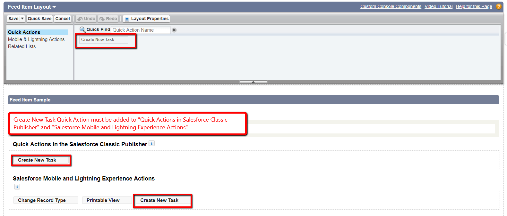
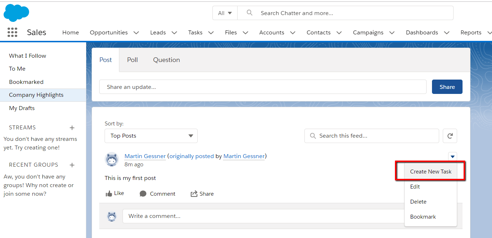
9.1.0.4 Editing feed posts and comments
What is true regarding editing feed posts and comments?
The ability for users to edit their own feed posts is enabled by default.
Salesforce Administrator can edit any post.
The ‘Allow users to edit posts and comments option’ in Chatter Settings is enabled by default. The permissions ‘Edit My Own Posts’ and ‘Edit Posts on Records I Own’ control the ability to edit posts and can be enabled or disabled according to the requirements of each organization. Record owners cannot always edit posts on records they own; it depends on the permission setting on both standard and custom profiles, disabled by default.
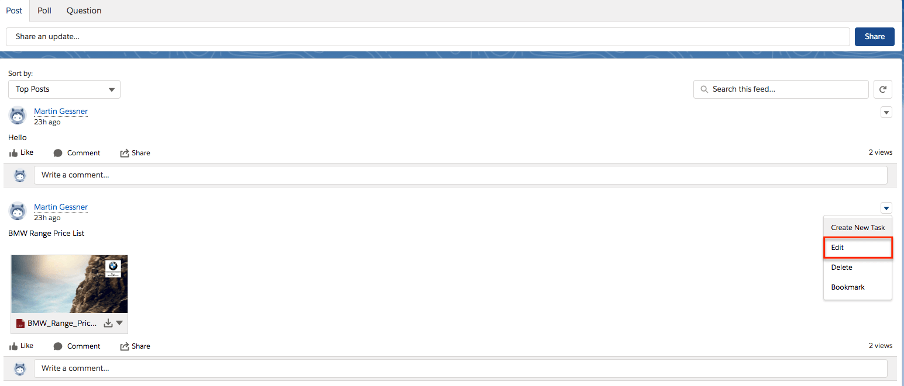
9.1.0.5 Pinned Post
Critical information in group chatter feeds is often not seen by users. How can the visibility of critical information in a Chatter group feed be improved?
- Pin the post with the critical information to the top of the feed.
Pinning a post in a feed will display it at the top of the feed. User permissions can be used to control which users are able to use this feature.
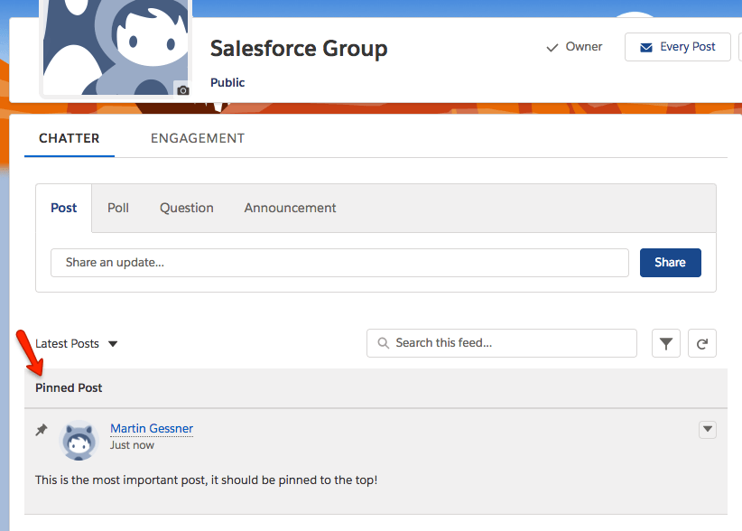
9.1.1 Private Chatter group
A sales manager is working on a proposal for a new business Opportunity and wants to share files and collaborate with his team. Only the team should have access to the information shared inside the group. What should the manager do?
- Create a private Chatter group and add the team members.
Information in a private Chatter group is only available to group members; the owner or manager of the group can add group members. Users cannot make requests to join an unlisted Chatter group. Files and information on the opportunity record feed are available to anybody that has access to the opportunity record.
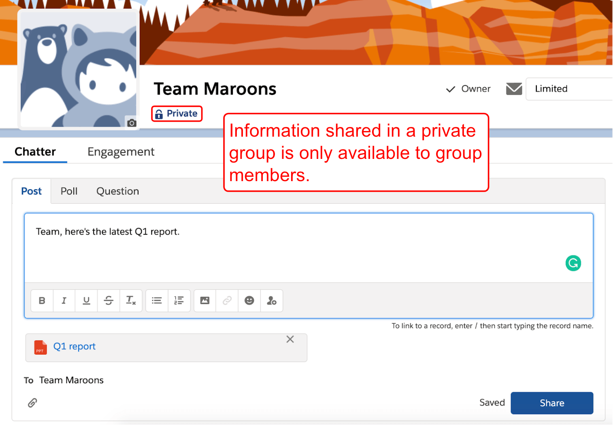
9.1.2 Allow Customer Invitations
Which of the following is correct for setting up a Chatter group in which customers can participate?
- ‘Allow Customers’ Chatter group setting must be checked
Allow Customers’ is a Chatter group setting that must be checked before customers can participate in the group.
An internal user must be the owner or manager of the group to invite new members (whether internal users or customers). The Standard type group membership role does not allow this action. Membership role type can be ‘Standard’ or ‘Admin’; the Admin role allows Chatter group management.
Unlisted Chatter groups may also include customers.
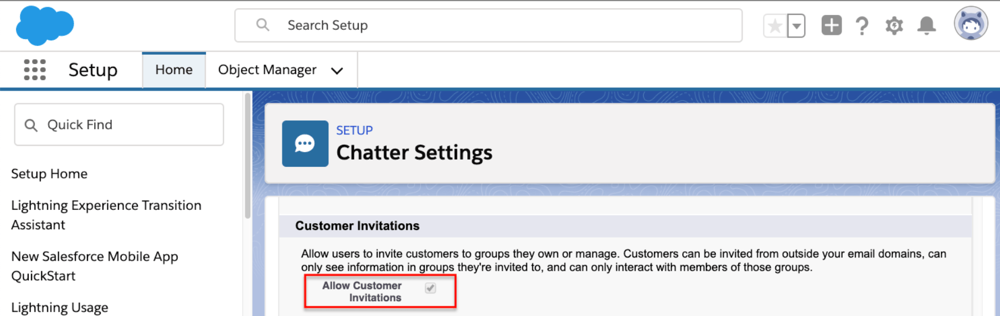
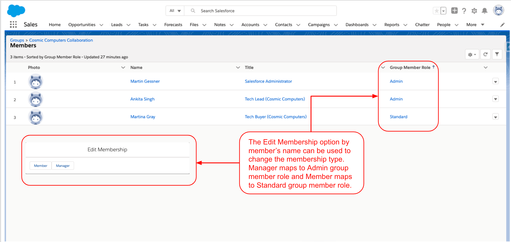
9.1.3 Mute Post
A user would no longer like to receive updates about a certain post in their feed. What feature should be used?
- Mute Post
The ‘Mute Post’ feature will remove the post from the feed on the Home and Chatter tab, and also stop notifications for updates to the post.
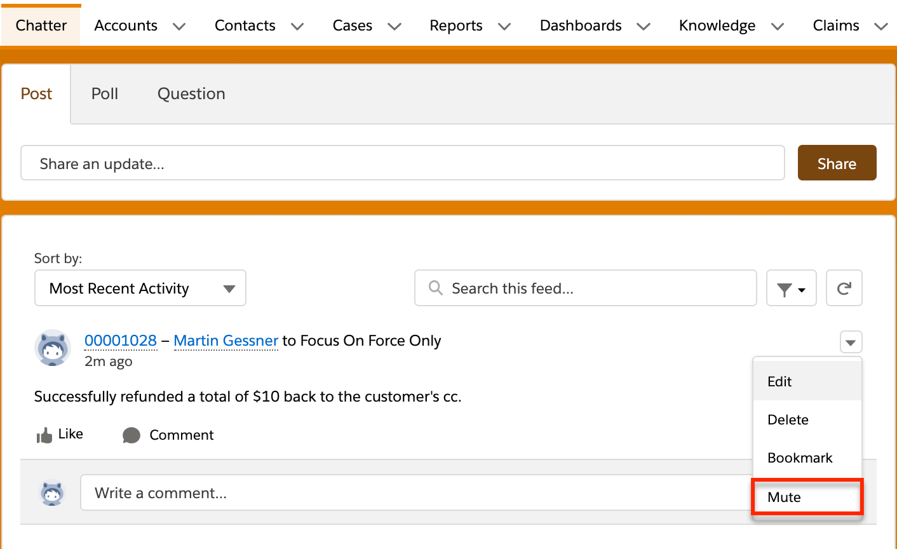
- A muted post will be unmuted for a user who is ‘@mentioned’ in the post.
Posts can be unmuted if the user is mentioned on the muted post.
Muting a post removes it from the Chatter and Home page feeds but not from a group, profile, or record feed. Muted posts can be viewed using the ‘Muted’ filter on the side panel in Salesforce Classic. Posts can be muted using the dropdown menu or by replying to post emails with the word ‘mute’.
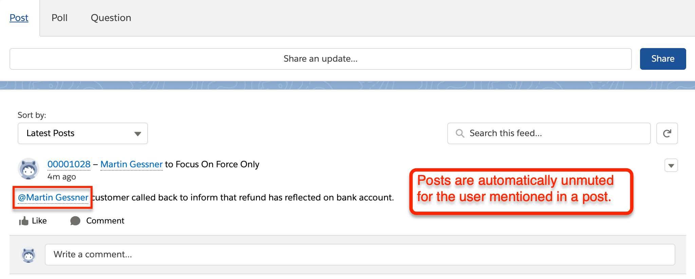
A sales rep travels frequently to client sites. To stay in touch with co-workers, she uses the Salesforce mobile app and Chatter posts. She likes Chatter as a communication tool, but sometimes there are too many posts on her feed and she would like to get rid of the notifications associated with some of the posts. What action can be taken in the Salesforce mobile app to achieve this?
- Use the ‘Mute Post’ feature
Salesforce does not have a ‘Hide Post’ feature. A Chatter post can only be deleted by the user who created it or by someone who has special permission to do so – i.e., a Chatter moderator or a user who has one of the following profile permissions: ‘Manage Chatter Messages’, ‘Modify All Data’, or ‘Can Approve Feed Post and Comment’. The Salesforce Administrator can control Chatter access on a profile or permission set basis, but this step should not be taken because it will completely turn off all Chatter features. Chatter supports the ability to mute posts in the main application and in the Salesforce mobile app. When a post is muted, notifications are no longer sent for it (unless someone @ mentions the user in the post, which unmutes it and notifications will start again).
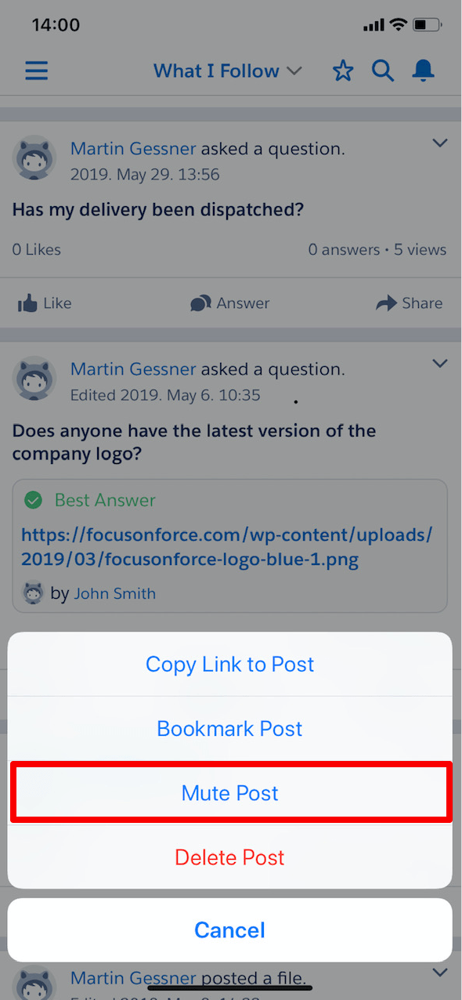
9.1.4 Rich Text
What is true regarding the ability to format Chatter posts with rich text?
Formatting posts with rich text is a Chatter setting that can be enabled or disabled.
Rich text includes bold, italic, underline, bullet, and numbered lists
Rich text allows the insertion of a hyperlink or an image to a post.
Allow users to compose rich text posts’ is a Chatter setting that allows rich text to be added to text posts, questions, and posts with link or file attachments. It is not supported on Polls. Rich text allows Chatter posts to be formatted in bold, italics, underline, bulleted, and numbered lists. Typeface selection, and text effects like shadows and highlights are not available with rich text. Rich text also allows the insertion of hyperlinks and graphics to the post.
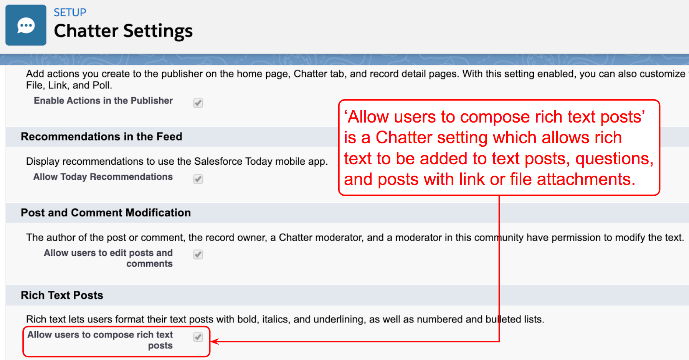
9.1.5 ‘@mentions’
Global Solutions has all of its Eastern Sales reps in one Chatter group. A sales rep @mentions the group to ask a question regarding an opportunity record. What is true regarding the use of @mention for a group on a record feed?
The group name that is @mentioned becomes a link to the group page.
A group-record relationship record is created.
The record displays in the group records related list in the group.
Using @mention for a group on a record’s feed creates a group-record relationship record, and the record displays in the Group Records related list in the group. The group name @mentioned becomes a link to the group page.
Only users with sharing access to the record can view the record. Users, public groups, and private groups that the user making the post is a member of can be @mentioned.
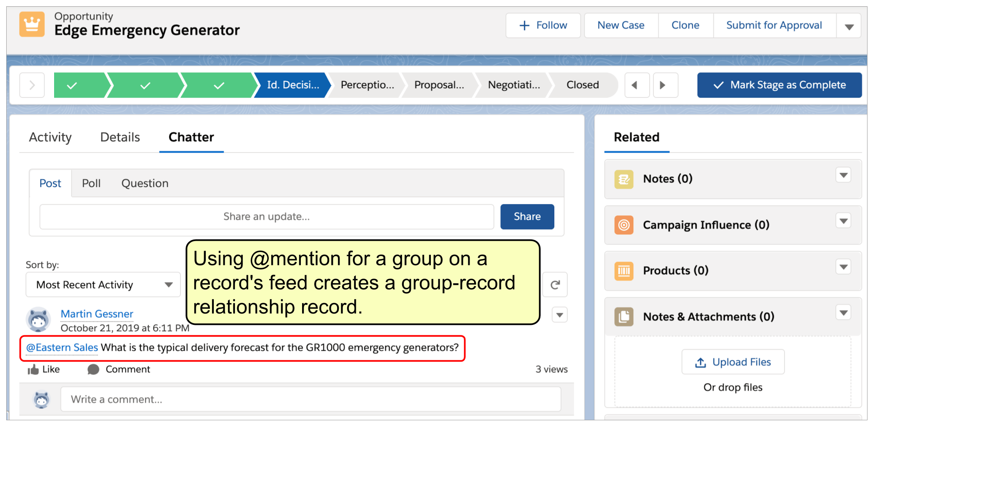
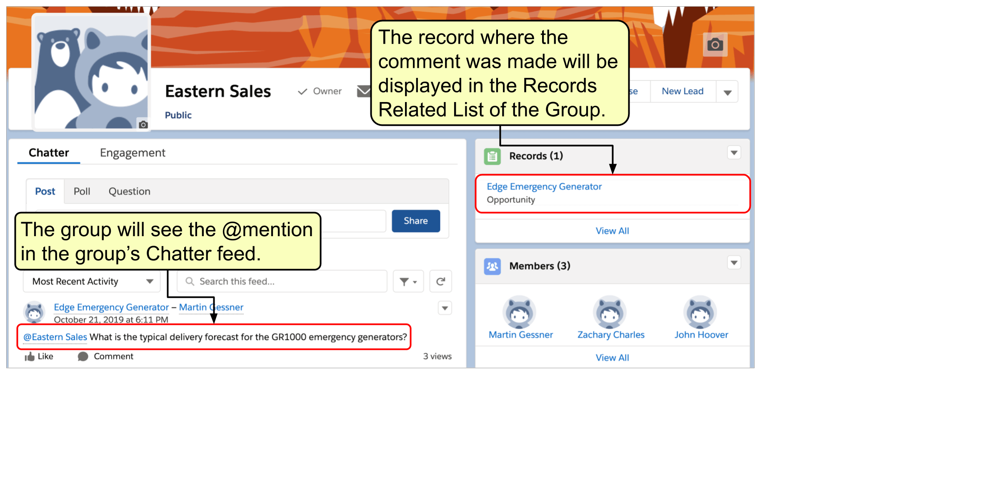
9.1.5.1 Notification Delivery Settings
A sales manager wants to make sure that he is notified in both desktop and mobile channels whenever he is @mentioned in a Chatter group that he is a member of. He has downloaded the recent Salesforce mobile app on his iPhone. How can this requirement be fulfilled in Notification Builder?
Enable delivery to the mobile channel in the
‘Individual mentions on a post’ Notification Type.Enable delivery to Salesforce Chatter and SF for iOS
in the ‘Individual mentions on a post’ Notification Type.Enable delivery to the desktop channel in
the ‘Individual mentions on a post’ Notification Type.
In order to get notified about the posts that a user needs to get notified of, the delivery to the specific channels and applications need to be enabled for the correct notification type. Editing the ‘Posts to a group’ notification type controls post notifications about all posts in a group where the user is a member. If the Salesforce application is selected but the channel is not, it will pause the delivery of notifications to the application until the delivery to the channel is enabled.
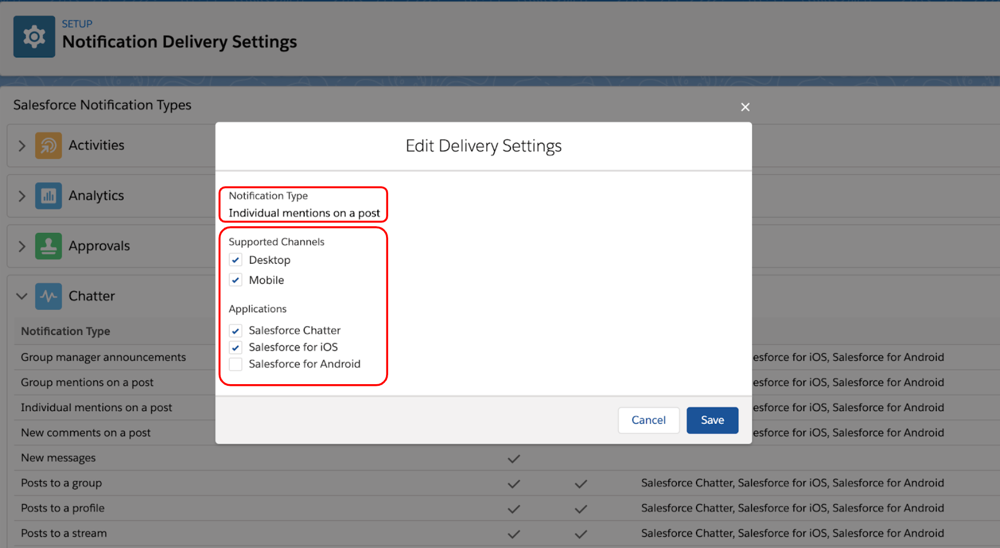
9.1.6 Group
The marketing team of Northern Trail Outfitters created a Chatter Group to post campaign ideas and get feedback from select employees. What Chatter group configuration would be most appropriate to allow only the group owners and managers to post to the group?
- Broad Only must be enabled
The ‘Broadcast Only’ setting can be enabled in any Chatter group such as a private, public, or unlisted group. When enabled, only group owners and managers are allowed to post in the group. Group members, on the other hand, can only comment on the posts. This allows having more focused and relevant discussions in the group.
The group setting for Access Type defines who can join the group but does not control who can submit posts. A ‘Post Sharing’ setting for Chatter groups does not exist.
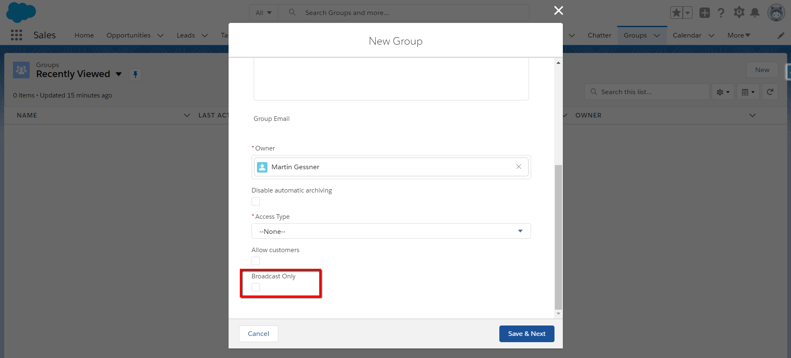
9.1.7 Chatter Questions
A Salesforce Administrator is providing end-user training on the many features of Chatter. What is true regarding Chatter Questions that the Salesforce Administrator should include in the training?
An answer can be marked as the best answer for a Question.
Chatter Questions is available in the Chatter feed, in groups, and in records.
Chatter Questions’ is available in the Chatter feed, groups, and records. The person who asked the question or the moderator can select the best answer for a question. Similar questions and knowledge articles appear when a customer asks a question using the ‘Question’ action in the Chatter publisher.
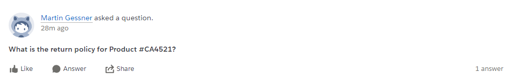
How can the Salesforce Administrator improve community engagement when giving users the ability to ask and answer questions in Chatter?
- Increase the visibility of the Question action in the publisher layout.
Chatter Questions allows users to ask questions in their Chatter feed, groups, and records. The ‘Question’ action is automatically added to the global publisher layout. To increase the visibility of the action, it can be moved to the left.
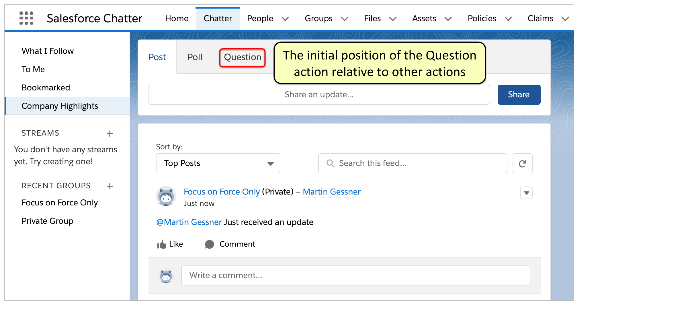
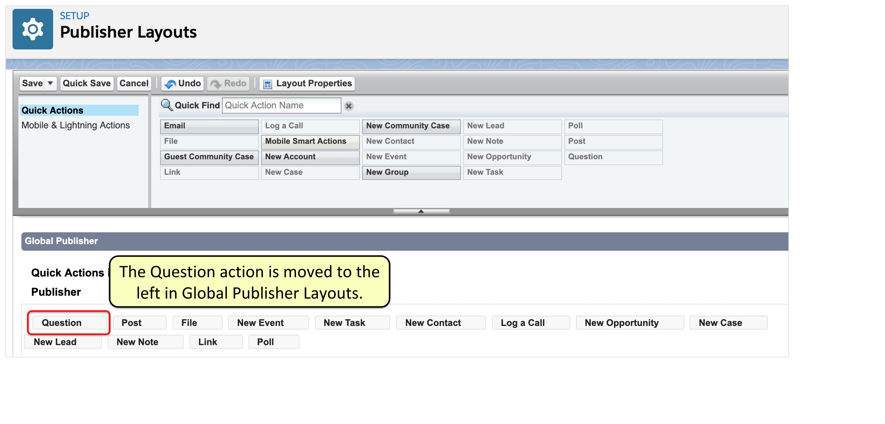
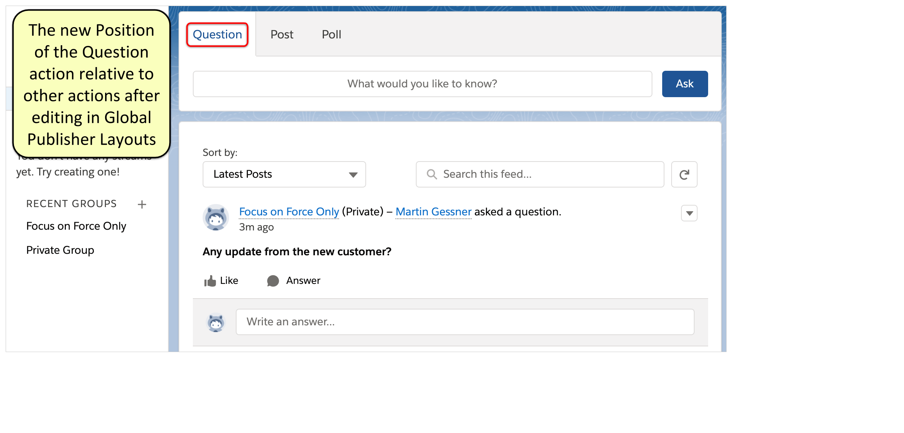
9.1.7.1 Question | Best Answer
After a question has been asked in Chatter Questions, the best answer can be selected. What is true regarding the best answer?
Only one answer can be selected as the best answer
A copy of the best answer appears at the top of the list of answers with a check mark.
Only one answer can be selected as the best answer by the person that asked the question or the moderator. The best answer status can be removed. Once selected, the best answer will appear at the top of the list.
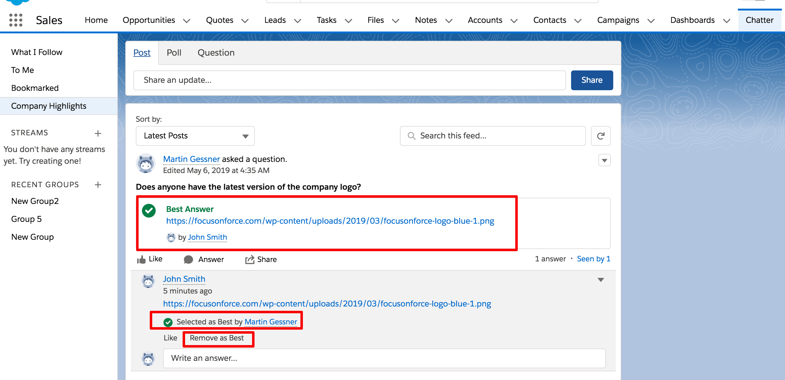
9.1.7.2 Question-to-Case
What should moderators do when a question in Chatter is not resolved?
- Escalate the question directly to a case in the feed using Question-to-Case.
Moderators can escalate an unresolved question in Chatter to a case directly using Question-to-Case. This feature needs to be enabled in Setup – Support Settings. Sending an email to an administrator or leaving the question to another user are not efficient ways to solve this problem. There is not an option to forward a Chatter question.
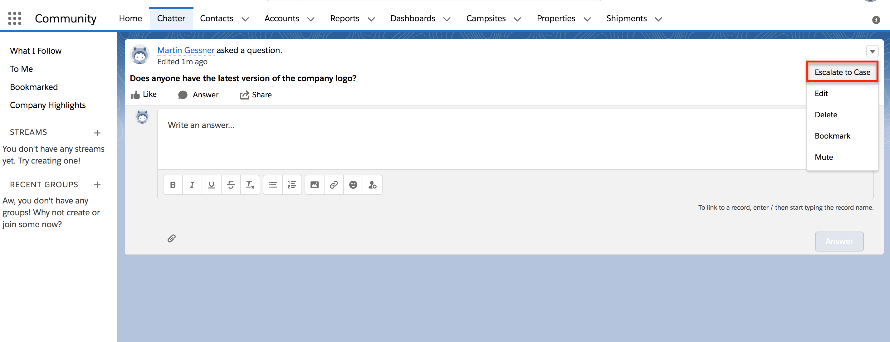
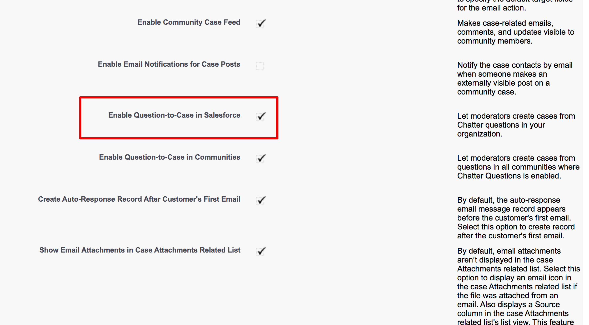
9.1.8 Email Digest
A user would like to receive email digests of the different Chatter activities in her personal feed. What are the available frequencies that can be chosen when opting for email digests of Chatter activity?
Daily
Weekly
Email digests would include the updates that are in one’s Chatter feed. In a personal digest, the updates that can be seen are from the Chatter groups that the user is a member of and the people, records, and files that the user follows. The frequency for these email digests can either be daily or weekly.
For daily digests, up to the last 50 updates from the previous day are sent. For weekly digests, up to the last 50 updates from the previous week are sent.
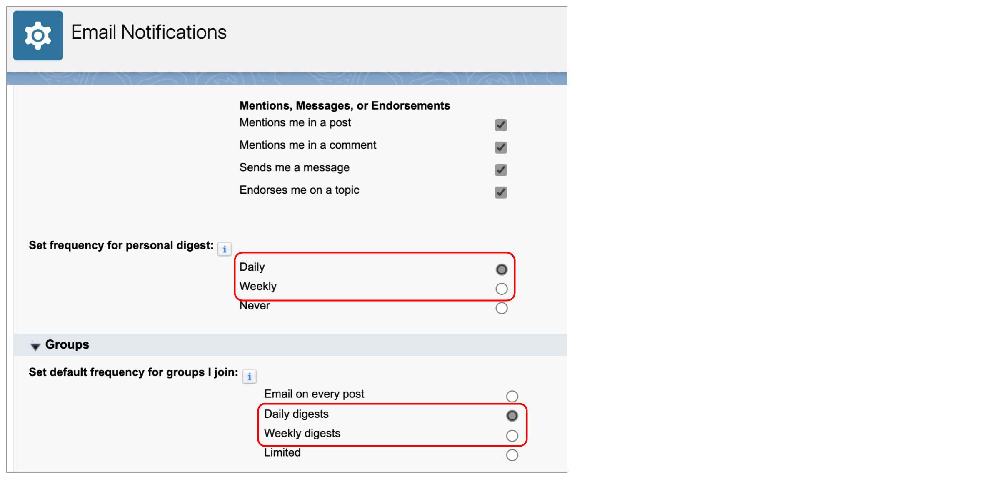
9.1.9 Chatter External licenses
A company that makes hiking apparel would like to collaborate with partners and find a way to be able to discuss various topics in groups. The collaboration is limited to discussions at this stage. What cost-effective solution would be recommended for this requirement?
- Use Chatter External licenses for the external users.
Chatter free licenses provide access to Chatter for ‘internal employees’ only. Chatter external can be used to invite users to customer Chatter groups from an email domain ‘outside of the organization’. Although a partner community could be set up, the requirement here is for collaboration via discussions only. Chatter external would be a more cost-effective option.
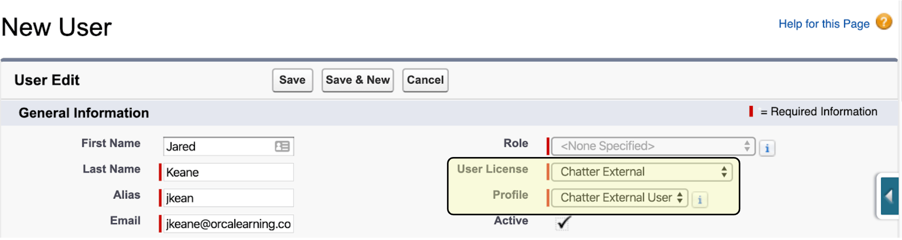
9.1.10 Chatter Free users
What do Chatter Free users have access to?
Files shared to the groups they belong to
Member profiles for any groups they belong to.
A Chatter Free license allows internal users to join and collaborate in groups, post comments, and share files. Users cannot access any Salesforce objects or data.
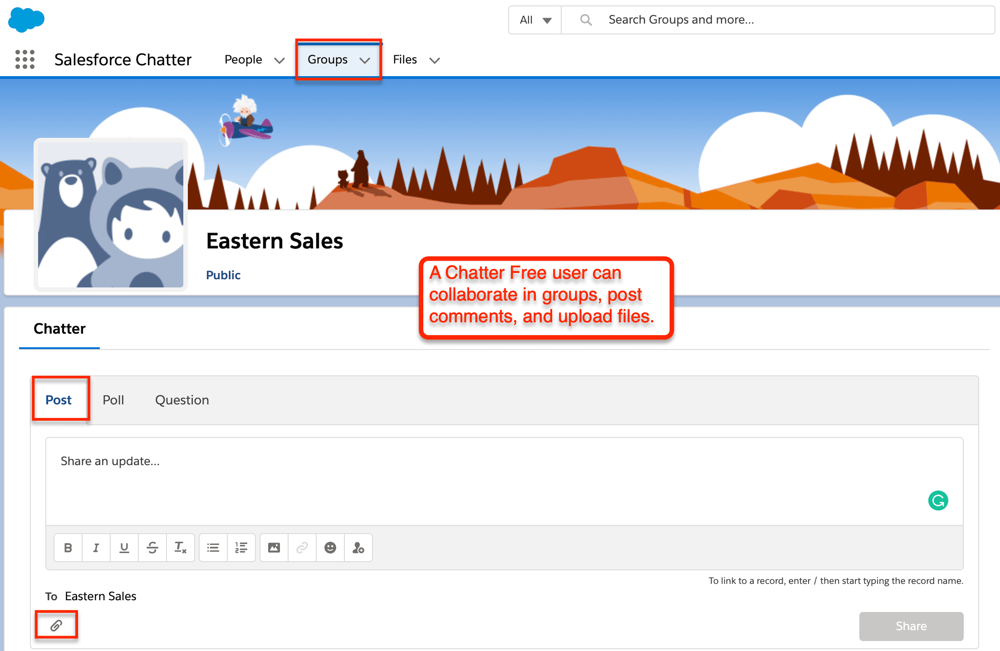
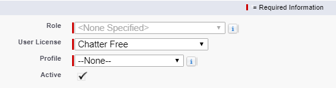
What Chatter License type can be used to provide internal users access to Chatter features only?
- Chatter Free
Chatter Free licenses provide access to Chatter and its associated components including people, profiles, groups, and files. They have no access to Salesforce objects or data. Chatter External is used to invite customers outside of the organization email domain into Chatter groups.
Chatter Only, also known as Chatter Plus provides access to some Salesforce objects in addition to Chatter features. It is no longer available to new customers, only existing Chatter Plus customers can purchase additional Chatter Plus licenses.
9.1.11 Chatter Settings
What is true regarding adding records to Chatter groups?
- Records cannot be added to groups that allow customers.
Groups that allow customers do not support adding records. Only certain standard objects support adding records to groups. The setting ‘Allow in Chatter Groups’ on custom objects determines if the records can be added to groups. Only users with permission to access the records have visibility to the record. Any number of records can be added to a group.
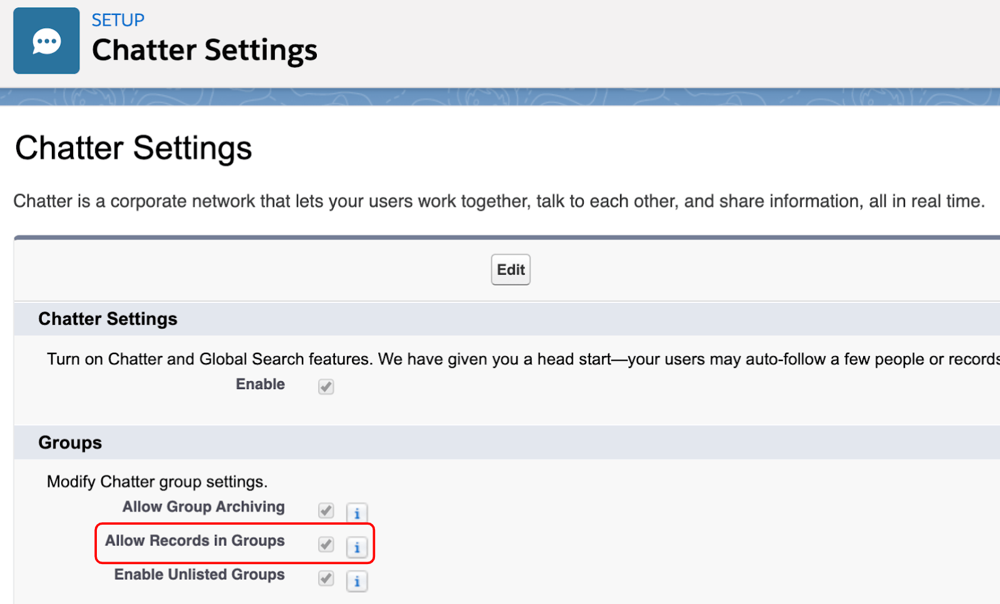
9.2 Report | Object Feed
The Sales Manager has requested a report of the feeds on certain objects. What is required to keep track of the feed activities on a record?
- Build the report based on a custom report type.
The Salesforce Administrator can enable the Sales Manager to monitor record feed engagement on standard or custom objects by creating a custom report type with the object’s feed as the secondary object.
A ‘Feeds list view’ or a standard feed report type does not exist. An App Exchange solution is not required.
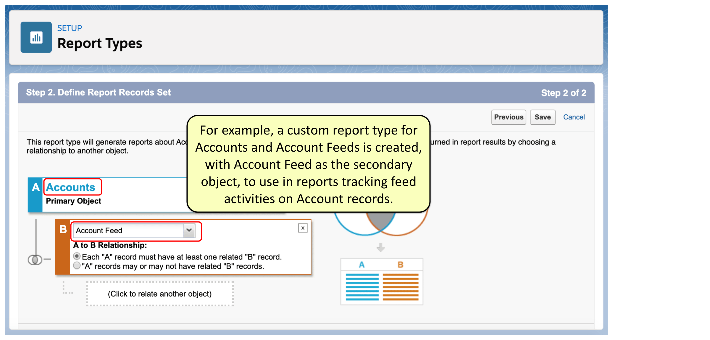
9.4 Salesforce Mobile App
9.4.1 Launchpad
What is the maximum number of items an administrator can add to a single Launchpad component?
- 20
A Launchpad component supports up to 20 items, though only the first six are visible until the user expands the component.
https://help.salesforce.com/s/articleView?id=xcloud.salesforce_app_launchpad.htm&type=5
The Sales team is excited to be able to access their data using the Salesforce Mobile App on their phone. The Salesforce Administrator explained that they will be able to access most of their data and functionality, but there are a few limitations. What is true regarding the data and functionality available using the Salesforce mobile app?
Records can be submitted for approval.
Account, Contact, and Opportunity records can be created, viewed, and edited.
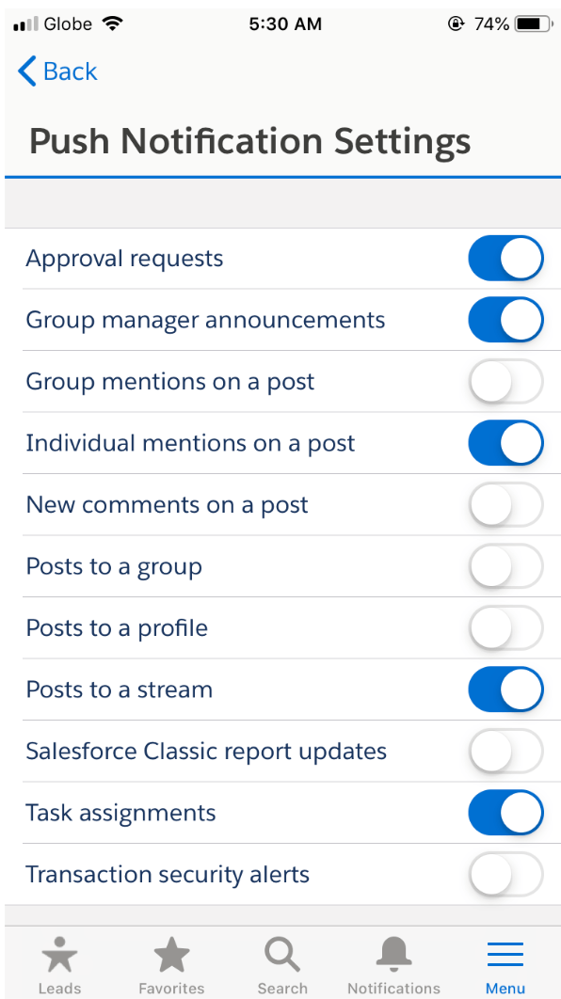
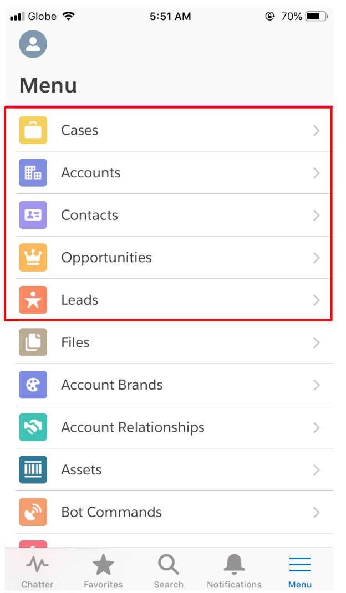
How would a Salesforce Administrator add a custom button to the Salesforce Mobile App Action bar?
- Customize ‘Salesforce Mobile and Lightning Experience Actions’ on the object page layout.
Once a custom button has been created, it can be added to the Salesforce Mobile App’s Action bar by customizing the ‘Salesforce Mobile and Lightning Experience Actions’ section on the object page layout.
Quick Actions do not relate to customizing the Salesforce Mobile App Action bar. Custom buttons do not automatically display but can be manually created and added through customization.
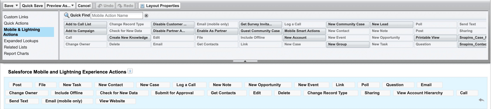
What does a Salesforce Administrator need to do to enable sales reps to change the price book on an Opportunity using the Salesforce mobile app?
Include the ‘Edit’ quick action in the ‘Salesforce Mobile & Lightning Experience Actions’ on the Opportunity page layout.
Add the Price Book field to the Opportunity page layout.
Because the Price Book field is now available on Opportunities, a user can create a quick action that allows users to add this information. Adding the Price book field to the Opportunity page layout ensures that the sales reps can see the field and adding the ‘Edit’ standard quick action allows them to edit that field in the Salesforce mobile app.
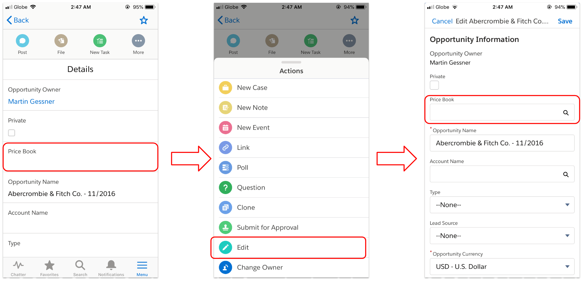
Which of the following is true when a user converts a lead using the Salesforce mobile app?
- Duplicated records can be created
Based on the duplicate alert a user receives when converting a lead, the user can decide to either save the records that could create duplicates or select other records to avoid duplicates altogether.
Lead conversion is available in Essentials, Group, Professional, Enterprise, Performance, Unlimited, and Developer Editions. A new contact can be associated with a newly created account and not just with an existing account. During lead conversion, the values of the mapped lead fields will not overwrite the existing values in the mapped contact fields.
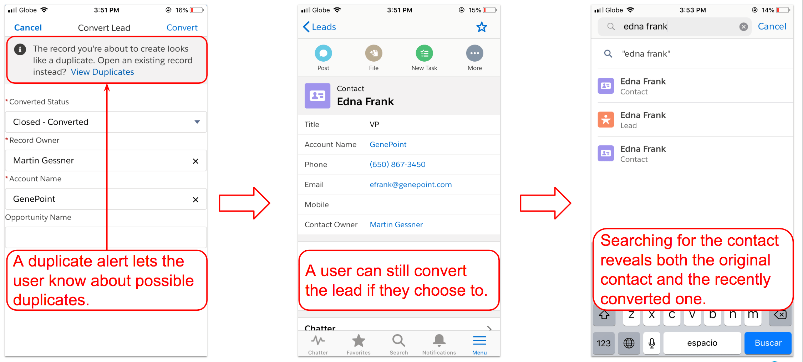
9.4.1.1 Push Notifications
To ensure that users of the Salesforce mobile app stay informed about critical events and notifications, the Salesforce Administrator is contemplating the activation of push notifications. Once enabled, which of the following statements about this feature is accurate?
Push notifications can be sent when a task is assigned to a user
Push notifications can be sent for Chatter group mentions
Push notifications can be sent for approval request
In the mobile app settings, users can customize the specific notifications they would like to receive. Notifications are available for a number of events including approval requests, task assignments, Chatter mentions, Chatter group mentions, and when report thresholds are met.
Push notifications must be enabled for the org by the Salesforce Administrator. The full content push notifications configuration is enabled by default for the Salesforce mobile app, but users can choose to display minimal content instead.
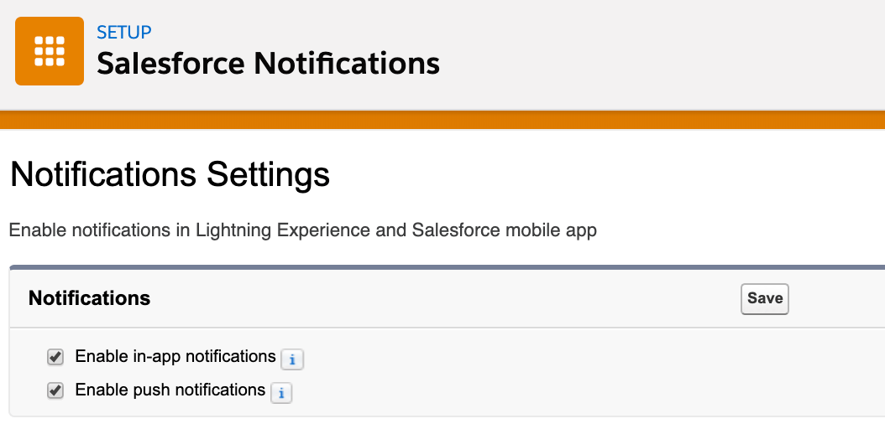
9.4.1.2 Users in Assigned Territories
Cosmic Ceramics has enabled Sales Territories and created an Eastern U.S. territory. It has also assigned a large account and ten sales reps to that territory. A sales manager, who is using a smartphone, wants to identify the sales reps who will have access to the account because they have been assigned to the Eastern U.S. territory. How should the sales manager find the information?
- The sales manager should check the Users in Assigned Territories related list on the account.
The ‘Users in Assigned Territories’ related list was created to find which users have been assigned to a particular territory. Manual searching for territory users and asking the Salesforce Administrator for assistance in finding them are both inefficient ways of getting the information. There is no standard Territories object.
Note: In Summer ‘24, Enterprise Territory Management has been renamed to Sales Territories. Users can manage territories as they previously did with Enterprise Territory Management under the name Sales Territories. The new name more accurately reflects the essential disciplines of designing and managing territories within teams’ broader sales performance management efforts. Additionally, Sales Territories is not limited to enterprise businesses.
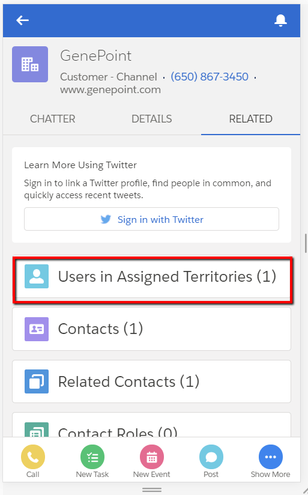
9.4.2 Report Highlights
Future Electronics has 15 sales metrics that are measured in its contact center. The sales manager receives a report that contains the center’s performance for each metric. However, she wants to be able to immediately see the high-level overview of three specific metrics when she views the report in the Salesforce mobile app. What feature can help achieve this requirement?
- Report Highlights
Report Highlights can be used to display up to eight key report metrics in the header of the report run page.
Conditional formatting is used to highlight if data within the report is within or outside of a particular threshold. Salesforce does not have features called ‘Featured Data’ or ‘Data Priorities’.
9.5 Salesforce mobile app | On Table
Which of the following features are available on the Salesforce mobile app with ‘Lightning on tablet’ enabled?
Better performance
Design time previews in the Lightning App Builder
Rotation between portrait and landscape modes
Lightning on tablet, the full-width tablet app experience, provides better support and performance while using Salesforce mobile app on iPad and Android tablets. It supports rotation between portrait and landscape modes, as well as design time previews while working on the Lightning App Builder, record pages, navigation, and Lightning apps.
Although Lightning apps built for mobile phones work in the new tablet experience, standard Salesforce apps and the Salesforce Console are not supported for the Salesforce mobile app.
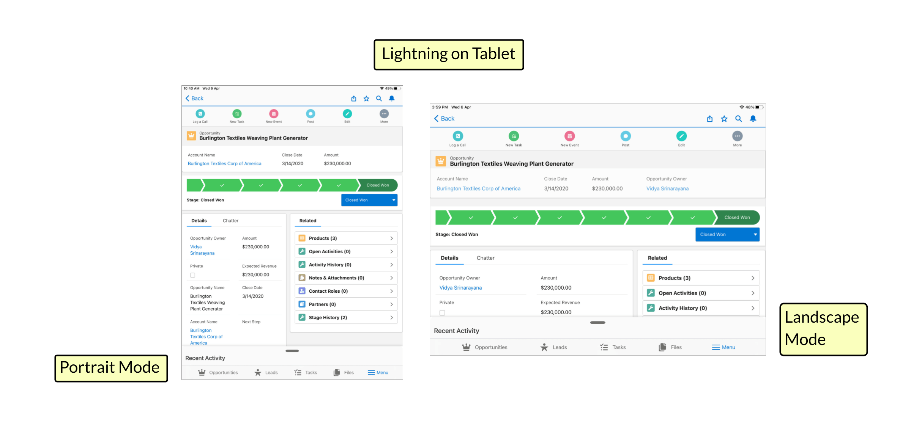
9.6 AppExchange
Acme Corporation would like to manage email campaigns, send mass emails, and track responses back in Salesforce. They do not need the complete functionality of Marketing Cloud at this stage. They envision that they need to send about 300,000 emails for a campaign in a month. What should the Salesforce Administrator suggest?
- Use a third-party app from the AppExchange
A number of AppExchange applications offer functionality to send mass emails and track responses back in Salesforce, including apps created by email campaign providers. Standard campaign functionality is intended to track campaigns and influence. You have the capability to send mass email and list email, with a maximum limit of 5,000 external email addresses per day for each licensed Salesforce organization.
ABC Technologies has recently completed a large marketing campaign across the globe. The Marketing Director wants to gather customer feedback related to the campaign. He wants to use Salesforce for sending survey forms and collating the survey results directly within Salesforce. How can a Salesforce Administrator meet this requirement?
Use the Salesforce native survey functionality
Look for an AppExchange survey application that metts the requirements.
Salesforce surveys allow collecting feedback and data from users or customers. It does not require additional licenses. However, after a certain number of responses are received, an add-on response pack must be purchased to receive additional responses. Surveys can be distributed to multiple participants (leads, contacts, campaign members) at a time.
There are a variety of survey applications available on AppExchange that could meet the requirements and avoid custom development and integration.
A connection from Salesforce to an existing cloud application is required. What should an administrator first do when evaluating the level of effort?
- Search for a connector or app for the application on the AppExchange
The first step for this type of requirement is to search for a connector for the cloud application on the AppExchange.
9.6.1 Credit card Payment
Cosmic Learning Solutions uses a Lightning Flow to gather information from customers regarding their interest in products. The administrator of the company is required to add a functionality to the flow that allows accepting credit card payments from the customers. What can the administrator do to meet this requirement?
- Download and install a Flow Solution from the AppExchange and use it in the flow.
Flows can be extended with third-party systems and apps using Flow Solutions on AppExchange. A Flow Solution can be utilized for use cases such as accepting credit card payments, conducting credit checks, and weather forecasts.
Creating a Visualforce page would require programmatic development. It is more practical for an administrator to utilize a declarative approach for a requirement. A Lightning page cannot be embedded within a flow. A Bolt Solution is a template that can be based on flows, but the requirement is to use the existing flow for accepting credit card payments. The bolt solution is a pack of pre-built solutions, which cannot be extended to include the existing flow however, the flow solutions can be extended to include the third-party apps.
9.7 AppExchange ISV partner
A Salesforce administrator has created a unique solution and wishes to list it as a paid application on the AppExchange. Which step is required to transition from a prospective developer to an official AppExchange ISV partner?
- Join the Salesforce Partner Community and sign the Partner Program Agreement.
Official recognition as an AppExchange ISV partner is primarily established through legal and community onboarding. A developer must join the Salesforce Partner Community, which serves as the central hub for all partners, and execute the Salesforce Partner Program Agreement (SPPA). This process grants access to essential tools like the Partner Business Org (PBO), and the ability to submit applications for business and security reviews.
Trailhead badges and specific technical certifications, while beneficial for professional development, are not mandatory legal requirements for becoming an ISV partner. Furthermore, Salesforce does not require the upfront purchase of a specific number of licenses. Instead, partners are typically provided with a trial Partner Business Org that includes a limited number of free licenses upon signing the agreement.
A Salesforce administrator is preparing a production-ready managed package for publication. Which combination of user permissions is necessary for a user to successfully upload a package to the AppExchange?
- Create AppExchange Packages and Upload AppExchange Packages permissions.
Salesforce requires two specific administrative permissions to handle the lifecycle of a package intended for the marketplace. The “Create AppExchange Packages” permission allows a user to bundle metadata into a package, while the “Upload AppExchange Packages” permission is specifically required to send that package to the AppExchange for distribution. Without both of these specific functional permissions, a user will be unable to complete the publishing process.
The “Download AppExchange Packages” permission is intended for users who need to install apps, not those who are publishing them. While “Customize Application” and “View/Modify All Records” provide broad administrative power, they do not inherently grant the specific rights needed to create or upload packages for public distribution. Similarly, “Manage Billing” and “Author Apex” are specialized permissions for financial administration and coding, respectively, and do not directly relate to the packaging and uploading workflow.
9.7.1 AgentExchange
A Salesforce administrator is browsing AgentExchange to find modular AI solutions that can be integrated into an existing Agentforce configuration. Which primary types of components are available for discovery and deployment on this marketplace?
- Prompts, Actions, Topics, and Agent Templates.
AgentExchange is specifically designed as a marketplace for “agentic” building blocks that extend the capabilities of Agentforce. The four core component types available are Prompts (instructional scripts), Actions (tasks the agent can perform), Topics (groupings of related actions and instructions), and Agent Templates (pre-configured, end-to-end agent structures). These modular elements allow organizations to rapidly deploy components tailored to specific industry needs or business roles without extensive custom development.
Custom Objects and Page Layouts are fundamental data architecture elements, but are not specialized components of the AgentExchange marketplace. Lightning Web Components (Aura, etc.) are for building user interfaces, rather than providing the reasoning or action logic required for autonomous AI agents. Reports and dashboards are data visualization tools rather than active agentic components.
https://appexchange.salesforce.com/learn/agentexchange-explained
https://agentexchange.salesforce.com/
An organization wants to explore pre-built AI solutions developed by trusted partners to improve their service efficiency. Through which primary locations can a user officially access the AgentExchange marketplace?
- The AppExchange navigation menu and the Agent Builder interface
AgentExchange is accessible through two primary channels designed to fit different user workflows. First, it is integrated into the main navigation of the AppExchange, where a dedicated “Explore” category for Agentforce provides a marketplace view of all available components. Second, for administrators already working within the platform, it can be accessed directly from the Agent Builder by navigating to the “This Topic’s Actions” section, allowing for seamless discovery and installation while configuring an agent.
While “Setup” is used to enable Agentforce, it does not serve as the marketplace for third-party components. There is no (standard) “Agent Marketplace” application in the App Launcher, as the marketplace is hosted within the AppExchange ecosystem. Furthermore, the Help & Training portal provides documentation and support but does not serve as a distribution platform for installing production-ready AI components.
https://appexchange.salesforce.com/learn/agentexchange-explained